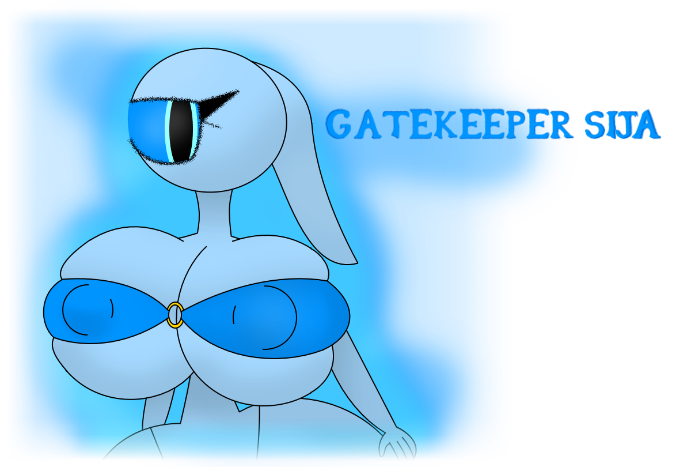

Sija is the all-so beautiful Zearer guardian of the entrance of the Glowing World. She's polite, smart and among the biggest of her kin.
She was a daughter to a librarian and was interested in both books and magic. In a young age she's been experimenting and learning a-lot of things about magic until her librarian father got worried. So he took little Sija to her room and locked her in to prevent her from getting all too dangerous. Sija read that in Zearer lore when a Zearer gets too powerful they will combust into flames by the envious greater ones which was what her father read about to lock her in. Sija couldn't open her door with magic because of the silver reinforced material that was only present in her world so she had no choice but to reconcider and end her studying life. But then she got visitors.
The visitors was a group of sentient Wisps that told her that she was allowed to turn powerful as the greater ones we're dead and unable to kill her if she's getting stronger. They also offered to give Sija a very rewarding job as a gatekeeper as she's going to be the most powerful Zearer magician thanks to her rapid learning and skills. Sija accepted.
Ages later and Sija was an all powerful wizard. She was a great gatekeeper but she always thought about how small she was. So she casted a spell on herself and got a hyper sized body with no way of turning back for some reason.
Not much but to live with the size then. :/
Go back to the main page